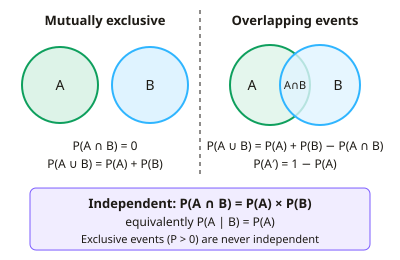

A-level Maths Year 12 · Topic 5
Probability and discrete distributions
Probability and discrete distributions is about measuring uncertainty precisely.
We will use the rules for mutually exclusive and independent events, and Venn diagrams, tree diagrams and tables for conditional probability.
Then we define discrete random variables and their probability distributions.
- 3 subtopics
- 200 questions
- Free: 5.1 notes and 10 questions
In this topic
- 5.1Probability rules: mutually exclusive and independent eventsFree below · 68 questions
- 5.2Venn diagrams, tree diagrams, two-way tables and conditional probabilityOpen in Full Marks · 65 questions
- 5.3Discrete random variables and probability distributionsOpen in Full Marks · 67 questions
5.1 · Free notes
Probability rules: mutually exclusive and independent events

Key points
- Every probability lies between 0 and 1, and the probabilities of all outcomes in a sample space sum to 1. A probability outside this range signals an error.
- The complement rule is P(A′) = 1 − P(A). It is especially useful for 'at least one' questions, where P(at least one) = 1 − P(none).
- The addition rule is P(A ∪ B) = P(A) + P(B) − P(A ∩ B). The subtraction stops the overlap being counted twice.
- Events are mutually exclusive if they cannot both occur, so P(A ∩ B) = 0. The addition rule then simplifies to P(A ∪ B) = P(A) + P(B).
- Events are independent if one occurring does not affect the probability of the other: P(A ∩ B) = P(A) × P(B), equivalently P(A | B) = P(A).
- Mutually exclusive and independent are different ideas. If P(A) > 0 and P(B) > 0 and the events are mutually exclusive, they are not independent, because P(A ∩ B) = 0 but P(A)P(B) > 0.
- To show independence, calculate P(A ∩ B) and P(A) × P(B) and show they are equal. Examiners expect this comparison written out, not just stated.
- Events are exhaustive if together they cover the whole sample space. A set of mutually exclusive and exhaustive events has probabilities summing to 1.
- Selecting without replacement makes successive selections dependent, because the probabilities change after each pick. Selecting with replacement gives independent selections.
- For independent events, 'both' means multiply and 'either/or (exclusive)' means add. For 'exactly one of A or B', use P(A)P(B′) + P(A′)P(B).
- Give answers as exact fractions, decimals or percentages, and show the rule used. Method marks are awarded for the correct rule even if the arithmetic slips.
In more detail
- Worked mutually exclusive: P(red) = 0.3 and P(blue) = 0.45 → P(red or blue) = 0.75.
- Worked independence test: P(A) = 0.6, P(B) = 0.3, P(A ∩ B) = 0.15 → 0.6 × 0.3 = 0.18 ≠ 0.15, so A and B are not independent.
- Worked at least one: three independent attempts, each succeeding with probability 0.4 → P(at least one) = 1 − 0.6³ = 0.784.
- Worked union: independent A and B with P(A) = 0.5 and P(B) = 0.4 → P(A ∪ B) = 0.5 + 0.4 − 0.2 = 0.7.
Practice
Probability rules: mutually exclusive and independent events: 10 questions
Pick an answer to check it, or open the answer for the explanation.
1. Events A and B are mutually exclusive with P(A) = 0.3 and P(B) = 0.5. What is P(A ∪ B)?
- 0.5
- 0.2
- 0.15
- 0.8
Show answer
D: 0.8. For mutually exclusive events P(A ∩ B) = 0, so P(A ∪ B) = P(A) + P(B) = 0.3 + 0.5 = 0.8.
2. A and B are independent with P(A) = 0.4 and P(B) = 0.25. Find P(A ∩ B).
- 0.15
- 0.65
- 0.4
- 0.1
Show answer
D: 0.1. For independent events P(A ∩ B) = P(A) × P(B) = 0.4 × 0.25 = 0.1. Adding (0.65) is the mutually exclusive rule for a union.
3. P(A) = 0.6, P(B) = 0.3 and P(A ∪ B) = 0.72. Which statement is correct?
- A and B are both independent and mutually exclusive
- A and B are mutually exclusive but not independent
- A and B are independent but not mutually exclusive
- A and B are neither independent nor mutually exclusive
Show answer
C: A and B are independent but not mutually exclusive. P(A ∩ B) = 0.6 + 0.3 − 0.72 = 0.18, which is not 0 (so not exclusive) and equals 0.6 × 0.3 (so independent).
4. A and B are mutually exclusive and both have non-zero probability. Which statement is correct?
- They are independent only if P(A) + P(B) = 1
- They must be independent
- They cannot be independent, since P(A ∩ B) = 0 but P(A)P(B) > 0
- They are independent if P(A | B) = P(B | A)
Show answer
C: They cannot be independent, since P(A ∩ B) = 0 but P(A)P(B) > 0. Independence needs P(A ∩ B) = P(A)P(B). For exclusive events the left side is 0, but the right side is positive, so they are dependent.
5. P(A) = 0.5, P(B) = 0.4 and P(A ∪ B) = 0.7. Find P(A ∩ B).
- 0.9
- 0.2
- 0.7
- 0.35
Show answer
B: 0.2. From P(A ∪ B) = P(A) + P(B) − P(A ∩ B): 0.7 = 0.9 − P(A ∩ B), so P(A ∩ B) = 0.2.
6. A fair six-sided die is rolled twice. What is the probability of getting at least one six?
- 11/36
- 25/36
- 1/36
- 1/3
Show answer
A: 11/36. P(no six in two rolls) = (5/6)² = 25/36, so P(at least one six) = 1 − 25/36 = 11/36.
7. The probability a train is late on any day is 0.15, independently each day. What is the probability it is on time on all of 3 days?
- 0.386
- 0.45
- 0.614
- 0.85
Show answer
C: 0.614. Independent days: 0.85³ = 0.614125 ≈ 0.614. The value 0.386 is the probability of at least one late day.
8. A bag has 5 red and 3 blue counters. Two are drawn without replacement. Find P(both red).
- 4/7
- 5/8
- 5/14
- 25/64
Show answer
C: 5/14. P = 5/8 × 4/7 = 20/56 = 5/14. Using 5/8 × 5/8 = 25/64 wrongly assumes replacement.
9. A and B are independent with P(A) = 0.5 and P(B) = 0.3. What is P(A ∪ B)?
- 0.8
- 0.15
- 0.65
- 0.5
Show answer
C: 0.65. P(A ∩ B) = 0.5 × 0.3 = 0.15, so P(A ∪ B) = 0.5 + 0.3 − 0.15 = 0.65. Using 0.8 ignores the overlap.
10. P(A) = 0.5, P(B) = 0.4 and P(A ∩ B) = 0.3. Which working correctly shows A and B are not independent?
- P(A) + P(B) = 0.9, which is not equal to 1
- P(A)P(B) = 0.2, which is not equal to 0.3
- P(A ∪ B) = 0.6, which is less than 1
- P(A ∩ B) = 0.3 ≠ 0, so A and B are dependent
Show answer
B: P(A)P(B) = 0.2, which is not equal to 0.3. Independence requires P(A ∩ B) = P(A)P(B). Here 0.5 × 0.4 = 0.2 ≠ 0.3. A non-zero intersection alone does not show dependence.
Keep going in Full Marks
Full Marks has 68 questions on Probability rules: mutually exclusive and independent events (58 more than here), set out in practice levels. You also get notes and 3D models for all 3 subtopics of Probability and discrete distributions, plus games, timed exams and past papers.
On your exam board
- AQATopic 12: Probability, Topic 13: Statistical distributions
- OCR ATopic 12: Probability, Topic 13: Statistical distributions
- OCR BTopic 12: Probability, Topic 13: Statistical distributions
- EdexcelTopic 12: Probability, Topic 13: Statistical distributions
- CambridgeTopic 5.3: Probability, Topic 5.4: Discrete random variables